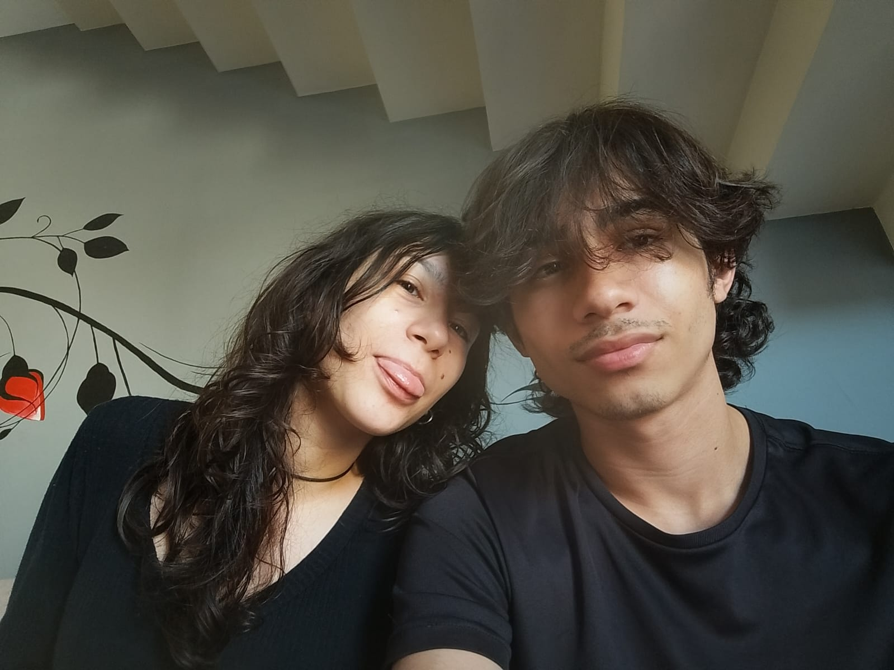

EXPOSIÇÃO · 15 FOTOGRAFIAS
Eu e Você, muito tempo pra viver
Pequenas manchas de tinta como a gente
guardados em fotografias.

01
O começo da exposição.
I
Sobre esta exposição
Não é uma linha do tempo perfeita. São só pequenos recortes do meu mundo depois que você chegou.
Esta página foi pensada como um espaço pra gente revisitar nossos momentos. Cada fotografia funciona como uma obra: tem um título, uma data, um lugar e uma memória associada a ela.
Eu queria uma forma diferente de evidenciar essas vezes onde estivemos juntos. Cada fotografia é uma época diferente que a gente viveu É engraçado ver o tanto que a gente já se viu e viveu juntos nesses quase 2anos.
Acervo selecionado
Quinze fotografias
Fim da exposição
“Eu quero fazer do mundo um lugar mais calmo pra ti, tudo é tão complicado. Às vezes o seu sorriso é o suficiente pra mudar meu dia completamente. Obrigado por tudo.”